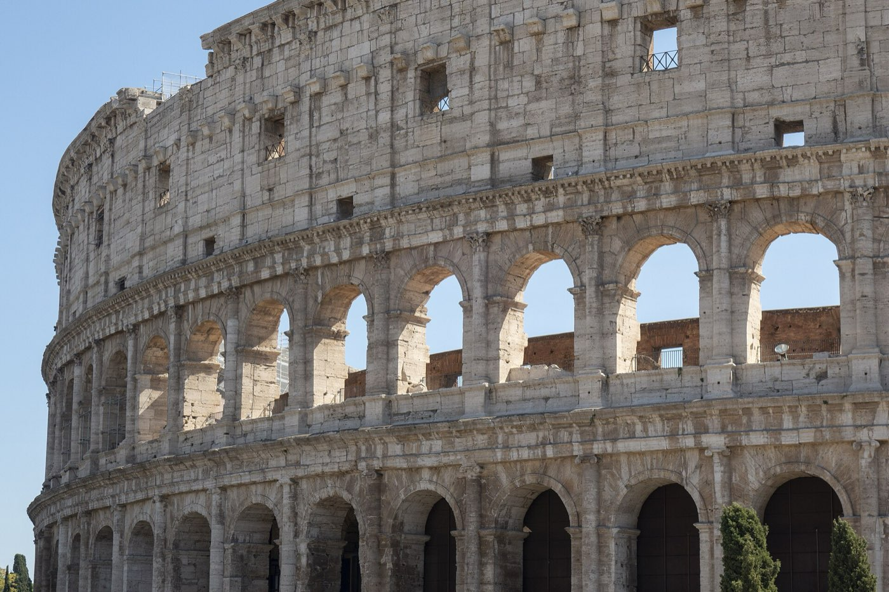
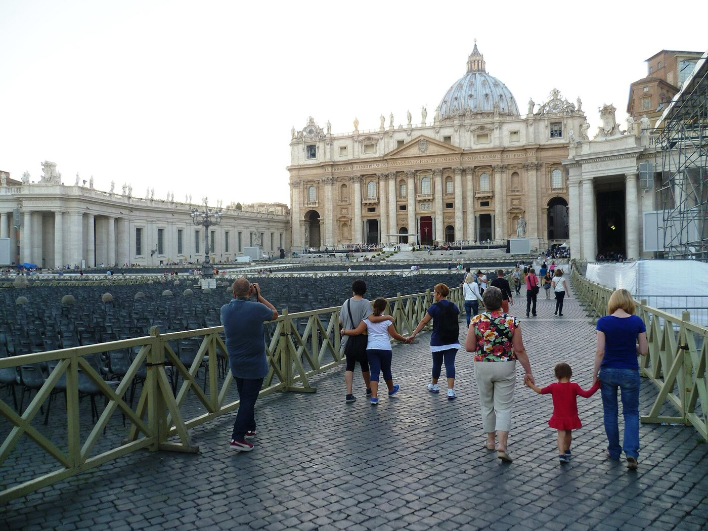
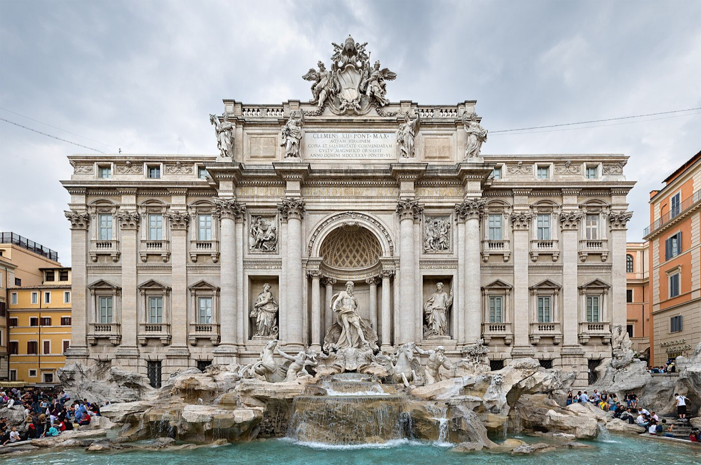

Rome · 3 days
3 Days in Rome: What You Actually Have to See
Three days in Rome comes down to two single sights that each eat half a day on their own: the Colosseum with the Forum and Palatine Hill, and the Vatican Museums with St Peter's. Here is what to book, in what order, and what a rushed itinerary gets wrong.

Three days covers Rome's essentials, but the shape of those three days is not neighbourhoods. It is two single sights that each swallow half a day on their own. The Colosseum, Roman Forum and Palatine Hill are one archaeological park, and doing it properly takes three to four hours. The Vatican Museums, the Sistine Chapel and St Peter's Basilica take just as long, on the far side of the river, through two separate queues that do not connect. Give each its own day, book the timed entry ahead, and don't stack anything ambitious alongside either one. What's left is the third day: the Pantheon, Piazza Navona, the Trevi Fountain and Trastevere, none of it demanding the same kind of planning.
Ancient Rome and the Vatican are also not close to each other. The Colosseum sits at the eastern edge of the historic centre; the Vatican is across the Tiber, a fifteen-minute walk or one metro change past the river. Trying to fit both into a single day means rushing at least one of them, and both punish rushing. The Sistine Chapel ceiling and the Colosseum's arena floor are not things anyone wants to speed past.
Two whole-day monuments, not neighbourhoods. The Colosseum, Forum and Palatine Hill share one ticket and need three to four hours to see properly. The Vatican Museums, Sistine Chapel and St Peter's need about the same, through a completely separate queue. Give each its own day. The third day, the Pantheon, Navona, Trevi and Trastevere, is where the trip finally slows down.
Day 1 — Ancient Rome: the Colosseum, Forum and Palatine Hill
Book the Colosseum's combined ticket as early as you can. It covers the Forum and Palatine Hill on the same booking, and slots for anything before midday go fast once the thirty-day booking window opens in high season. The standard ticket covers the arena floor; the Full Experience ticket adds the underground, where gladiators and animals waited before being raised into the ring, and it comes with a stricter arrival rule: up to thirty minutes before your slot; the usual ticket allows fifteen minutes either side.
Visit the Colosseum first, while the morning is still cool and the security queue is at its shortest. The Forum and Palatine Hill are a five-minute walk from the Colosseum's exit, and the same ticket gets you into both for twenty-four hours after first use, so there's no real need to see them the same morning. Most people do anyway, since the alternative is a second security queue on a different day. Set aside three hours for all three sites if you want more than a glance at the Forum's ruins from the raised walkway above them.
The must-sees
One archaeological park, best started early. The combined ticket covers all three sites for 24 hours from first entry.
Day 2 — Vatican City: the Museums, Sistine Chapel and St Peter's
Book the Vatican Museums separately from St Peter's Basilica. The museum ticket does not include the Basilica, and the two sit behind different entrances with different queues that never meet inside. The museums' booking window opens sixty days ahead, but that number is misleading in high season: between May and September, early slots are often gone within a week or two of the window opening, well before the sixty days are up. Book the day it opens if your travel dates fall in that stretch.
The route from the entrance to the Sistine Chapel is fixed and one-way, through the Pio-Clementine galleries, the Gallery of Maps and the Raphael Rooms, and takes about two hours at a steady walk without stopping to read a label. Add the chapel itself and St Peter's Basilica afterwards and the whole visit runs closer to four hours. St Peter's Basilica itself is free and needs no ticket, though the security line can run sixty to ninety minutes in summer; a reserved-entry ticket skips it. Cover your shoulders and knees before you queue for any of the three. It is checked, not suggested, and being turned away at the door wastes more time than dressing for it ever would.

The must-sees
Two separate queues on two sides of the same building. Budget the whole morning and into the afternoon.
Day 3 — The historic centre: Pantheon, Navona, Trevi and Trastevere
Nothing on the third day needs booking weeks ahead, which after two mornings of timed entry is rather the point. The Pantheon is the one exception. It no longer allows a free walk-in; a timed ticket is required. It's still a light booking though: a few days' notice from a phone, not a race against a window that opens months out. Full price is €7 as of mid-2026, with free entry for under-18s, Rome residents and on the first Sunday of every month.
Piazza Navona, the Pantheon and the Trevi Fountain sit within about ten minutes of each other on foot, so a single loop covers all three without much backtracking. Trastevere, across the river to the south, is a different kind of stop entirely: no single sight to check off, just streets built for an evening walk before dinner.

The must-sees
A loop through the historic centre on foot, with nothing timed except the Pantheon.
What to book, and how far ahead
| What | Booking window | So |
|---|---|---|
| Colosseum, Forum & Palatine | Opens 30 days ahead | Book the moment the window opens for a summer morning slot |
| Vatican Museums | Opens 60 days ahead | High-season slots are often gone within 1–2 weeks of opening, well short of the full 60 |
| Pantheon | A few days ahead is usually enough | The only one that doesn't need planning before the trip starts |
| St Peter's Basilica | Free, no ticket for the basilica itself | A reserved-entry ticket skips the 60–90 minute summer security queue |
How much time each big sight actually takes
| Sight | Minimum time | Note |
|---|---|---|
| Colosseum, Forum & Palatine | 3–4 hours | One ticket, three sites, valid 24 hours from first entry |
| Vatican Museums to the Sistine Chapel | 2 hours | The fixed one-way route alone, before St Peter's |
| St Peter's Basilica | 1–2 hours more | Separate queue; longer again with the dome climb |
| Pantheon | 30–45 minutes | Small inside, and the crowd keeps moving |
| Piazza Navona or Trevi Fountain | 15–20 minutes each | Pass-through squares, not sit-down visits |
What three days does not cover
Cutting deliberately beats rushing. These need more time than a three-day trip has:
- Ostia Antica — Rome's other, much larger ancient ruin, a short train ride out and worth a full day on its own.
- Galleria Borghese — timed entry sold in strict two-hour slots and famous for selling out; fitting it in competes directly with either monument day.
- The catacombs — out on the Appian Way, well outside the centre, and a half-day trip by themselves.
- Trastevere at a proper pace — this itinerary gives it an evening. People who live there give it a night with nowhere to be.
- The Villa Borghese gardens and EUR — the park above the gallery and Rome's fascist-era district are both real Rome, both for a longer trip.
Common questions about 3 days in Rome
Is 3 days enough for Rome?
For the essentials, yes. Three days covers the Colosseum, Forum and Palatine Hill, the Vatican Museums, Sistine Chapel and St Peter's, and the historic centre around the Pantheon and Trevi Fountain. It is not enough for Ostia Antica, the Galleria Borghese, or the outer neighbourhoods, and treating any of those as an add-on to an already full day is where most short trips go wrong.
Should I visit the Colosseum or the Vatican first?
Either order works, since they're on different days regardless. What matters more is booking both the moment their windows open: thirty days ahead for the Colosseum, and as close to the sixty-day mark as possible for the Vatican in high season, since its early slots go first.
How far in advance should I book Vatican Museum tickets?
The booking window opens sixty days before the visit date, but don't wait for that number to feel urgent. Between May and September, and around Christmas, the early-morning slots are commonly gone within a week or two of the window opening. Book as soon as your dates are fixed.
Is the Colosseum underground worth it?
If gladiator and stage-machinery history interests you, yes. It's the level where animals and performers waited before being raised into the arena, and it's not visible on the standard ticket. It does come with a stricter arrival window, up to thirty minutes before your slot, so build in extra buffer getting there.
Do I need to book St Peter's Basilica in advance?
Not to get in. Basic entry to the Basilica is free and needs no ticket. What you're paying to skip is the security queue, which can run sixty to ninety minutes in summer; a reserved-entry ticket bypasses that line. The dome climb is a separate, same-day ticket bought at the portico.
What's the Vatican dress code, and is it actually enforced?
Shoulders and knees covered, no shorts, no sleeveless tops, no hats, for the Vatican Museums, Sistine Chapel and St Peter's Basilica alike. Staff check at the door. Visitors who arrive underdressed have to leave the queue, cover up somehow, and rejoin it.
Is the Pantheon free?
No longer a free walk-in. It now requires a timed ticket, currently €7, with free entry for under-18s, Rome residents and on the first Sunday of each month. It's a much lighter booking than the Colosseum or Vatican: a few days' notice is normally enough, sometimes even the day before.
Tailored to your trip
Travelling to Rome? Plan your trip around your real arrival and departure times.
Download iOS App